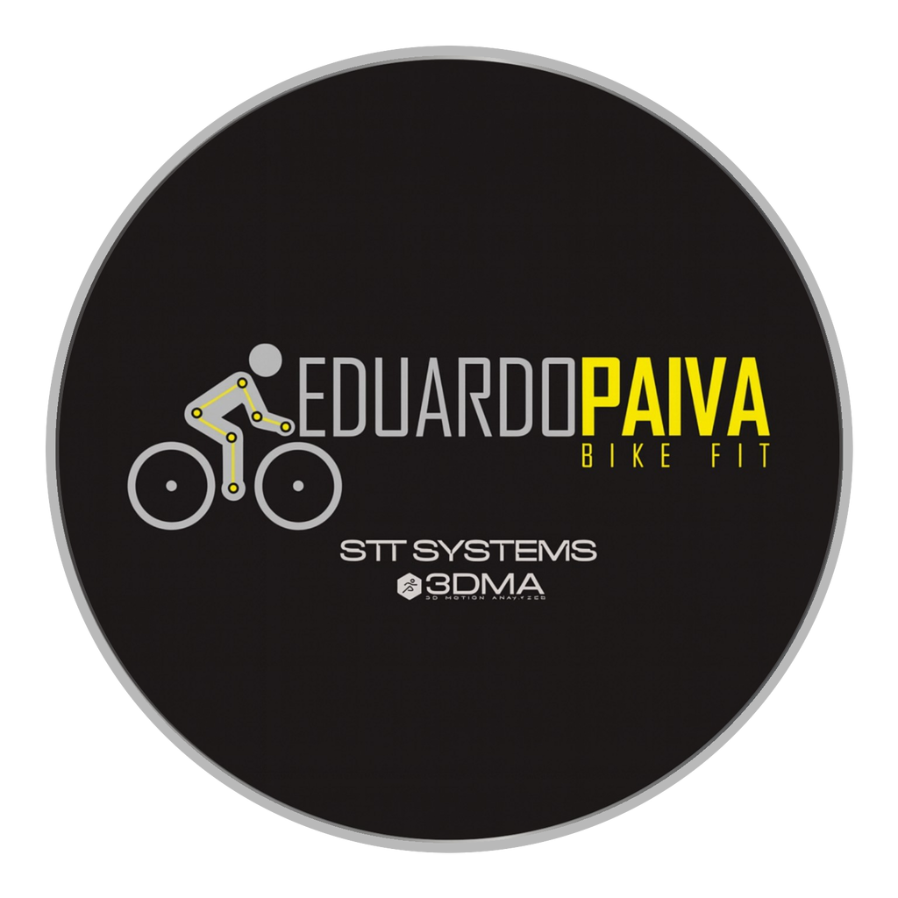
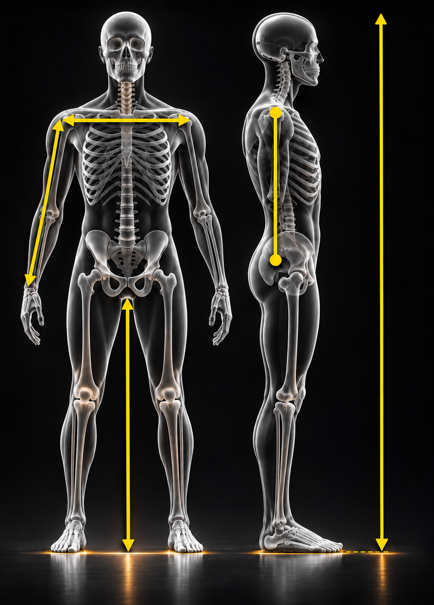
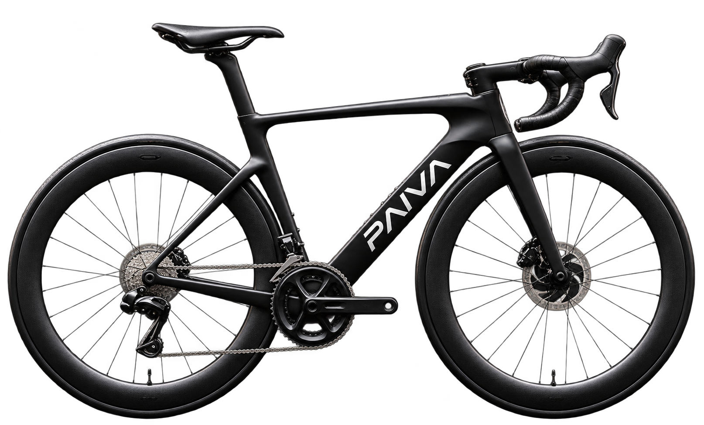

Da anatomia à geometria. Inteligência aplicada ao movimento.
01 / Cadastro do cliente
Ficha individual para apresentação ao cliente
Ao tocar em Imprimir / salvar PDF, o relatório inclui os dados antropométricos, a imagem da bicicleta e os resultados estimados.
02 / Medidas antropométricas
Preencha em centímetros. Toque no ? para ver onde medir.

04 / Referências na bicicleta

Fotografias fixas por modalidade. As medidas aparecem em cartões discretos e são atualizadas automaticamente.
05 / Resultados do pré-fit
TT / TRIATLO · protocolo dos apoios
Na TT, a referência prioritária são as coordenadas dos apoios de antebraço, não o stack/reach do quadro Road. Meça a partir do centro do movimento central: pad stack até o topo do apoio; pad reach até a borda posterior do apoio. Utilize sempre a mesma convenção ao comparar bicicletas.
Preencha as duas medidas obtidas no bike fit para comparar geometrias TT.
Medidas reais da bicicleta (opcional)
Use apenas se quiser calcular a distância horizontal existente entre o bico do selim e o apoio das mãos. Não é uma recomendação de ajuste.
Entenda as medidas
Stack: altura vertical do centro do movimento central até o topo de referência do tubo de direção.
Reach: distância horizontal entre esses mesmos pontos.
Selim → mãos: distância horizontal do bico do selim até o centro da manopla (MTB) ou o ponto de apoio no STI (Road). Na TT, a referência dos apoios de antebraço é diferente do reach do quadro.
Relatório de pré-fit antropométrico
Estimativa inicial · sujeita à avaliação biomecânica dinâmica
01 · Identificação do cliente
02 · Dados da bicicleta
03 · Medidas antropométricas
04 · Resultados do pré-fit
05 · Visualização da bicicleta
Bicicleta ilustrativa PAIVA · Medidas preliminares do cliente
Imagem ilustrativa da modalidade. Os valores são estimativas iniciais e não substituem a avaliação dinâmica.
Os valores são referências iniciais de pré-fit. Top tube efetivo é calculado por um modelo geométrico simplificado com ângulo de tubo do selim assumido; seat tube é uma faixa exploratória e depende do projeto do quadro. Stack e reach são faixas exploratórias por estatura, não medidas ideais calculadas individualmente. As duas regras de altura do selim utilizam pontos de medição diferentes. Confirme a posição com avaliação dinâmica e geometria real da bicicleta.